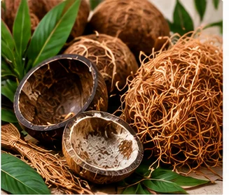
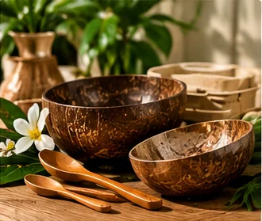
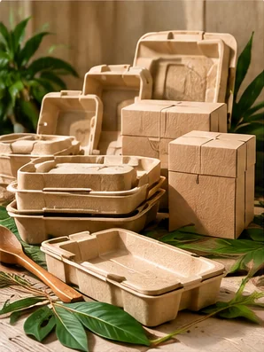
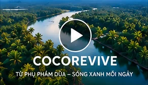

01 / VẤN ĐỀ
+
Tiềm năng & Thách thức
Áp lực rác thải phụ phẩm nông nghiệp Bến Tre và gánh nặng rác nhựa công nghiệp.
Khơi nguồn sáng tạo từ phụ phẩm dừa Bến Tre, phát triển các sản phẩm gia dụng và giải pháp bao bì từ vật liệu có nguồn gốc thực vật, hướng đến lối sống có trách nhiệm và giá trị bền vững.
Từ nguồn nguyên liệu bản địa đến những sản phẩm mang giá trị cho cuộc sống.
Bến Tre được mệnh danh là “thủ phủ dừa” của cả nước với hơn 79.000 ha diện tích trồng dừa và xuất khẩu sản phẩm tới trên 90 quốc gia. Mỗi năm, hoạt động thu hoạch và sơ chế tạo ra một khối lượng khổng lồ phụ phẩm gồm gáo dừa, chỉ xơ dừa và mụn dừa. Dù đã có một số ứng dụng truyền thống như làm than hoạt tính hay giá thể trồng trọt, hàng trăm ngàn tấn phụ phẩm vẫn bị đốt bỏ hoặc thải ra môi trường gây phát thải khí nhà kính và lãng phí tài nguyên hữu cơ giá trị.
Đồng thời, xu hướng tiêu dùng xanh đang bùng nổ: các lệnh hạn chế đồ nhựa dùng một lần và nhu cầu chuyển đổi sang bao bì phân hủy sinh học tạo nên cơ hội thương mại lớn cho các giải pháp vật liệu thuần tự nhiên.
Từ thực tế ấy, dự án COCOREVIVE – Khởi nghiệp sản phẩm gia dụng và bao bì sinh học từ phụ phẩm dừa Bến Tre ra đời nhằm hiện thực hóa mô hình kinh tế tuần hoàn, gia tăng giá trị chuỗi nông sản dừa Việt Nam.

🔊 Rê chuột để nghe tiếng ViệtÁp lực rác thải phụ phẩm nông nghiệp Bến Tre và gánh nặng rác nhựa công nghiệp.
Khai thác xơ dừa và gáo dừa bằng công nghệ ép định hình sinh học không độc hại.
Mạng lưới người tiêu dùng thế hệ mới (Gen Z, Millennials) và doanh nghiệp ESG.

🔊 Rê chuột để nghe tiếng ViệtDÒNG SẢN PHẨM 01Vẻ đẹp tự nhiên trong từng góc sống.
Bộ sưu tập đồ gia dụng và trang trí khai thác vẻ đẹp mộc mạc của gáo dừa: chén, bát trang trí, khay đựng đồ, hộp vật dụng và quà tặng.
Sản phẩm chưa kiểm nghiệm tiếp xúc thực phẩm chỉ được giới thiệu cho mục đích trang trí hoặc đựng vật dụng phù hợp.

🔊 Rê chuột để nghe tiếng ViệtDÒNG SẢN PHẨM 02Đóng gói thông minh – Hướng tới tương lai xanh.
Nghiên cứu khay, hộp, vật liệu đệm định hình và khay ươm cây từ xơ dừa kết hợp những thành phần phù hợp theo từng ứng dụng.
Khả năng phân hủy, độ bền và an toàn thực phẩm phải được kiểm nghiệm trước khi đưa ra công bố cụ thể.
Gắn kết ý tưởng với hơn 79.000 ha dừa Bến Tre trù phú.
Đưa nét mộc mạc của dừa vào những sản phẩm mang bản sắc riêng.
Hướng tới khai thác hiệu quả tài nguyên và kéo dài giá trị sử dụng.
Mỗi phần của cây dừa đều chứa đựng tiềm năng. Khi kết hợp với thiết kế sáng tạo và tư duy kinh tế tuần hoàn, nguồn phụ phẩm có thể trở thành những vật dụng hữu ích cho cuộc sống.
Trái dừa tượng trưng nguyên liệu Bến Tre; lá xanh gợi thiên nhiên; đường nét tuần hoàn thể hiện khát vọng tạo vòng đời mới cho phụ phẩm.
TỪ PHỤ PHẨM DỪA
SỐNG XANH MỖI NGÀY
Tận dụng nguyên liệu địa phương
Sáng tạo đồ gia dụng và bao bì
Hướng tới kinh tế tuần hoàn
BẾN TRE – KHỞI NGUỒN GIÁ TRỊ XANH
Các sản phẩm được giới thiệu ở dạng ý tưởng và mẫu thiết kế.
Từ nguồn nguyên liệu địa phương đến quy trình thiết kế và phát triển sản phẩm đề xuất.
Tiếp nhận phụ phẩm từ hoạt động chế biến dừa.
Tách gáo dừa, xơ dừa và vật liệu phù hợp.
Làm sạch, gia công, xử lý sợi và phối trộn.
Tạo mẫu sản phẩm gia dụng và bao bì.
Đánh giá công năng, độ bền và tính an toàn.
Thử nghiệm khách hàng và cải tiến sản phẩm.
Từ vùng dừa xanh mát, những phụ phẩm quen thuộc đến ý tưởng đồ gia dụng và bao bì – cùng khám phá câu chuyện khởi nghiệp COCOREVIVE.

Nội dung có sử dụng AI tạo sinh. Video minh họa được nhóm biên tập và kiểm tra trước khi công bố.
Những thành viên cùng chung ý tưởng phát triển sản phẩm từ nguồn tài nguyên dừa Bến Tre.
Nhóm trưởng
Họ tên: [Cập nhật]
MSSV: [Cập nhật]
Xây dựng ý tưởng, nghiên cứu thị trường và giải pháp.
Truyền thông
Họ tên: [Cập nhật]
MSSV: [Cập nhật]
Thiết kế nhận diện, poster, hình ảnh.
Video
Họ tên: [Cập nhật]
MSSV: [Cập nhật]
Xây dựng kịch bản, tư liệu và hậu kỳ.
Kỹ thuật
Họ tên: [Cập nhật]
MSSV: [Cập nhật]
Lập trình website, kiểm thử và chuẩn bị hồ sơ.
Tìm hiểu thêm về nguyên liệu, sản phẩm và phạm vi phát triển của dự án.
Dự án tập trung vào gáo dừa, xơ dừa và những vật liệu có nguồn gốc dừa. Tùy sản phẩm, nguyên liệu có thể được xử lý hoặc kết hợp với thành phần khác.
Đây là định hướng nghiên cứu, chưa phải đặc tính đã được xác nhận. Khả năng phân hủy phụ thuộc thành phần, lớp phủ, chất kết dính và điều kiện xử lý sau sử dụng. Nhóm cần kiểm nghiệm trước khi công bố.
Chỉ những sản phẩm đã được đánh giá về vật liệu, lớp hoàn thiện và điều kiện tiếp xúc thực phẩm mới được giới thiệu cho công dụng này. Những mẫu chưa kiểm nghiệm được định hướng làm đồ trang trí hoặc chứa vật dụng phù hợp.
Dự án đề xuất phát triển hai dòng sản phẩm dưới một thương hiệu chung, kết hợp câu chuyện địa phương Bến Tre, thiết kế hiện đại và nghiên cứu tính năng của vật liệu từ phụ phẩm dừa.
COCOREVIVE hiện là ý tưởng khởi nghiệp trong khuôn khổ đồ án sinh viên. Các mẫu minh họa chưa đồng nghĩa với sản phẩm đã được kiểm nghiệm hoặc thương mại hóa.
Nếu được triển khai hiệu quả, dự án có thể góp phần bổ sung đầu ra cho phụ phẩm phù hợp, mở rộng cơ hội hợp tác với cơ sở chế biến và phát triển sản phẩm mang bản sắc Bến Tre.
Có. AI hỗ trợ xây dựng bản thảo nội dung, gợi ý thiết kế, sản xuất tư liệu minh họa và hỗ trợ lập trình. Nhóm có trách nhiệm kiểm tra, chỉnh sửa và công khai đúng những khâu thực tế sử dụng AI.